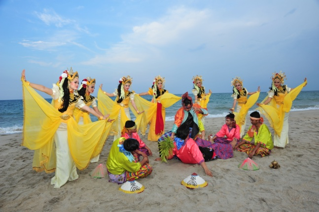

Terengganu is one of the states in Malaysia, located on the northeastern coast of Peninsular Malaysia. It is
known for its rich cultural heritage, beautiful beaches, and traditional Malay way of life. Here are some key
aspects and attractions related to Terengganu
Masjid Kristal
The Masjid Kristal (Crystal Mosque) is a magnificent mosque in Kuala Terengganu, Malaysia,
Location: Islamic Heritage Park, Wan Man Island, Kuala Terengganu, Malaysia.
Construction: Built between 2006 and 2008.
Inauguration: Officially opened on 8 February 2008
Design: A combination of modern and traditional Islamic architecture, featuring steel, glass, and
crystal.
Exterior: The mosque's unique structure is clad in glass and steel, giving it a striking, crystal-like
appearance. It shimmers in daylight and is beautifully lit at night.
ULEK MAYANG

Ulek Mayang
Ulek Mayang is a traditional dance from Terengganu. According to legend, a group of fishermen experienced a
storm and one of them was possessed by an evil spirit of the sea. The worship dance is assisted by seven
princesses to appease the evil spirits to return to the sea. A contemporary version of the Ulit Mayang Dance
is performed in many official and state occasions.
It is a kind of worship dance where a unique song is sung to the accompaniment of a Malay orchestra
consisting of drums, gongs, violins and accordians.
Ulek Mayang Song
The Ulek Mayang song is a unique song that accompanies this dance. This song is claimed by some Malaysians
to be haunted because apart from its origin as a worship song, its rhythm is also said to be quite creepy.
However, there are some contemporary interpretations of this song either in movies or new songs. Malaysian
rock diva Ella once sang this song in a rock version, while Malaysian thrash metal band Cromok released
several instrumental versions of this song.
NASI DAGANG
Nasi Dagang
Nasi Dagang is known for its unique combination of ingredients and preparation methods, making it a favorite
for both locals and tourists.
The dish is primarily made from a mix of white fragrant rice and white glutinous rice, which is steamed
twice in coconut milk to achieve the right texture. Nasi Dagang is known for its simplicity, deliciousness,
and nutritional value, often served
as a complete meal that includes rice, fish curry, pickles, and chilly sauce. A key ingredient in the curry
is ikan tongkol (tuna fish), although mackerel or other types of fish can also be used.